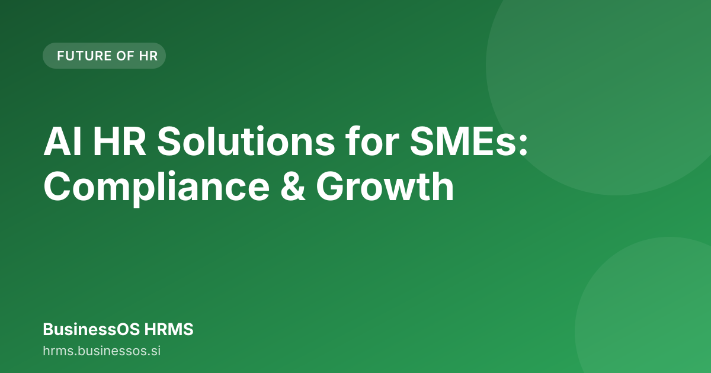

AI HR Solutions for SMEs: Compliance & Growth

The landscape of running an SME in India is defined by rapid growth mixed with complex regulatory hurdles. For modern business owners, implementing ai powered hr solutions for smes is no longer a luxury but a necessity for sustainable operation. This guide examines how AI-driven HRMS can specifically address the unique compliance and operational burdens faced by Indian businesses, moving beyond generic software promises.
How AI is Transforming HR for India's SME Ecosystem
Managing human resources in a fast-growing Indian SME requires navigating a constantly evolving web of labour laws, tax structures, and employee expectations. Traditional HR methods—spread sheets, manual paperwork, and fragmented systems—struggle to keep pace with this complexity.
AI functions as an intelligent layer over HR processes. It does not merely store data; it interprets context. For an SME founder, this shift allows the focus to move from being a reactive compliance officer to a strategic business leader.
Moving Beyond Basic Digitization
Many businesses transition from paper to digital formats, but this constitutes digitization, not transformation. A basic HR software might digitally store employee leave requests. An AI-powered system, however, can instantly check if an employee has sufficient accrued leave balance based on their specific employment contract and company policy, flagging potential violations before manager approval.
This proactive capability is vital for SMEs that cannot afford external HR consultants for every minor query. AI automates routine tasks, allowing a small HR team to concentrate on employee engagement and talent retention—factors that drive business growth.
The Biggest Pain Points: Why Generic HR Software Fails Indian SMEs
Generic HR software, often designed with global or Western market assumptions, frequently falls short when applied to the Indian context. Indian SMEs encounter unique operational friction points that these systems often overlook.
The Compliance Chasm
The primary failure point is compliance. Indian labour laws are dynamic. A generic system might manage basic attendance tracking effectively, but when calculating statutory deductions—PF, ESI, Professional Tax (PT)—it often necessitates significant manual intervention or costly third-party plug-ins.
For an SME owner, this means dedicating valuable time to cross-referencing circular updates from the Ministry of Labour or state-specific tax changes, diverting attention from core business activities.
The Integration Nightmare
Another common issue is system integration. HR software must communicate seamlessly with accounting software, payroll systems, and attendance trackers. Generic solutions often operate in silos. Data must be exported from one tool, manually input into a payroll sheet, and then used to generate a PF challan. This multi-step, manual process is where errors occur, potentially leading to regulatory penalties.
Mastering India-Specific Compliance with AI: PF, ESI, and PT
This is where ai powered hr solutions for smes deliver the most significant return on investment for Indian businesses. Compliance in India is not a one-time setup; it is an ongoing, adaptive process.
Automated PF and ESI Calculations
Provident Fund (PF) and Employees' State Insurance (ESI) calculations are complex due to varying wage ceilings, contribution percentages, and the split between employer and employee shares.
An AI HRMS is programmed with the latest statutory requirements for India. When an employee’s salary structure changes, or a new employee joins, the system automatically calculates the exact contribution amount for PF and ESI based on their salary bracket and category. This eliminates human error in calculations—the most common source of compliance risk.
Handling Professional Tax (PT) Across States
Professional Tax (PT) is state-specific. Requirements in Maharashtra may differ from those in Karnataka. An intelligent system must be location-aware. It must correctly identify the employee's state of employment and apply the corresponding PT slab and deduction rules automatically.
This level of granular, location-based compliance is difficult to manage manually across multiple state operations.
Beyond Payroll: Automating Employee Lifecycle Management (Onboarding to Offboarding)
Payroll represents only one stage of the employee cycle. The true efficiency gain comes from automating the entire employee lifecycle. This is where HR automation for small businesses India demonstrates its value.
Frictionless Employee Onboarding
Consider the hiring of a new sales executive. In a manual process, HR must collect physical documents, manually input data into HR files, create system accounts, notify the IT team, and manage the welcome kit delivery.
With an AI-driven onboarding module, the process is streamlined:
- Digital Document Collection: The new hire completes necessary paperwork digitally, which the system verifies against required documentation.
- System Provisioning: The system automatically creates the employee profile in the HRMS and notifies the IT department to provision email and system access.
- Policy Acknowledgement: The employee digitally signs company policies, and the system securely stores these timestamped acknowledgments.
This reduces the administrative burden on the HR team from days to minutes.
Seamless Offboarding and Exit Formalities
Offboarding is equally critical for compliance and data security. An AI HRMS manages this by:
- Tracking final settlement calculations, including prorated leave encashment.
- Automating the handover checklist for company assets.
- Ensuring all statutory filings related to the exit are initiated correctly.
The Power of the Audit Trail: Ensuring Tamper-Evident Compliance for Indian Audits
For any SME managing sensitive employee data and statutory payments, the concern over audits—whether internal or from government bodies—is significant. Proof of adherence to regulations is essential.
The Immutable Record
This is where the "tamper-evident audit core" is vital. An AI HRMS does not just save data; it logs every action taken on that data. If an HR manager changes an employee’s designation, the system records who made the change, when it occurred, the previous value, and the new value. This log is immutable.
During an audit, instead of searching through physical or disparate digital folders for proof of compliance, you can instantly generate a comprehensive, time-stamped report detailing the complete history of any employee record. This provides a robust defense against compliance queries.
Scaling Smart: Choosing the Right AI HRMS for Your SME Growth
Selecting an HRMS is not about selecting the most feature-rich platform; it is about solving your highest-risk, most time-consuming problems first. As an SME founder, you require a solution that scales with your business without demanding a complete system overhaul at every compliance milestone.
Checklist for Evaluating AI HRMS
Before adopting any platform, use this checklist to assess if it meets the specific needs of an Indian SME:
| Feature | Generic Software Check | AI-Powered HRMS Check | Why it matters for Indian SMEs |
|---|---|---|---|
| PF/ESI Calculation | Manual input or basic formula | Automated, rule-based calculation | Mitigates the risk of statutory penalties. |
| Compliance Updates | Requires manual user action | Automatic updates based on regulatory changes | Ensures ongoing adherence to the latest laws. |
| Data Integrity | Standard logging | Tamper-evident, immutable audit trail | Essential for smooth government audits. |
| Onboarding | Paper-based or basic form | Fully automated, workflow-driven | Reduces administrative load and improves employee experience. |
| Reporting | Basic data exports | Context-aware, compliance-ready reports | Provides actionable insights for informed decision-making. |
If your current software only addresses the first two checks, it is likely missing the core value proposition of modern HR technology tailored for India.
If you seek a platform built specifically to manage the complexities of the Indian market while leveraging AI for efficiency, you should explore the capabilities of BusinessOS HRMS.
Further reading across our network: Workflow Management Solution for Small Teams · Best Workflow Software for Teams: From Chaos to Flow
Conclusion
For Indian SMEs navigating the complexities of modern business, the reliance on spreadsheets and fragmented tools is outdated. AI powered hr solutions for smes offer the necessary combination of automation, accuracy, and regulatory intelligence. By automating PF, ESI, and PT calculations, streamlining onboarding, and providing an immutable audit trail, you are not just adopting software—you are building a resilient, compliant, and scalable operational backbone for your business. It is time to move from managing paperwork to mastering people, powered by intelligent systems.
The journey to scalable growth for an Indian SME is paved with smart operational decisions. By implementing robust, AI-driven systems, you can confidently manage complex compliance while freeing up your team to focus on innovation and customer success. It is time to upgrade your HR strategy.
Try BusinessOS HRMS → https://hrms.businessos.si/
Frequently asked questions
How does AI help an SME manage PF and ESI compliance in India?
AI-powered HRMS automates the calculation, deduction, and filing of PF and ESI based on real-time employee data. This reduces manual errors and ensures adherence to the latest regulatory changes specific to the Indian labor landscape.
What makes an HRMS 'tamper-evident' for Indian SMEs?
A tamper-evident audit core creates an immutable record of every HR action—from salary changes to leave approvals. This provides SMEs with verifiable proof during internal or external audits, offering peace of mind.
Is AI HRMS suitable for very small startups in India?
Yes, modern AI HRMS platforms are designed with modularity in mind. They start by automating core processes like onboarding and payroll compliance, allowing small teams to scale their HR operations without hiring a large dedicated HR department.
How do AI HR solutions help Indian SMEs with compliance?
AI systems interpret complex Indian labour laws and automatically manage statutory deductions like PF and ESI. This eliminates manual errors and ensures your SME stays compliant with dynamic regulations.
What is the difference between basic HR software and AI HRMS?
Basic software digitizes tasks, while AI HRMS interprets context. It proactively flags policy violations, automates complex calculations, and allows your small team to focus on strategy rather than administration.